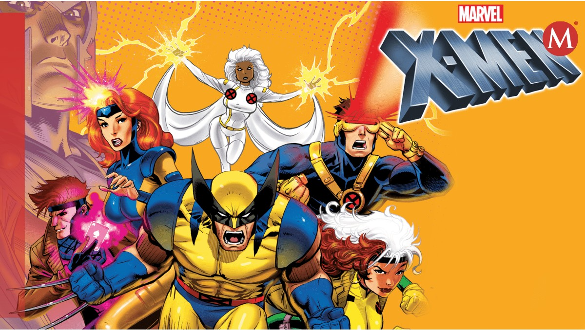

X-Men: el equipo

Los X-Men son un grupo de superhéroes mutantes del universo Marvel. Cada integrante posee habilidades especiales que utiliza para proteger a la humanidad y defender a los mutantes de la discriminación.
Bajo la dirección del Profesor X, el equipo busca demostrar que los humanos y los mutantes pueden convivir en paz.
Leer más